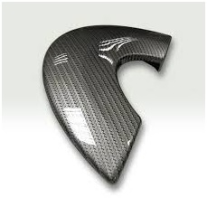
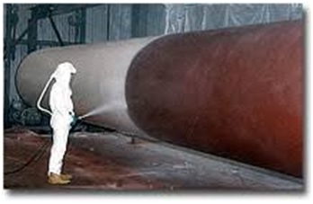
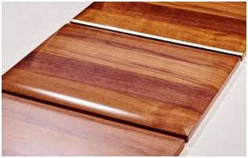
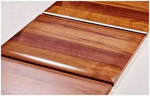

POLYURETHANE COATINGS
Polyurethanes have excellent chemical resistance.
We have formulated our 2K Polyurethane topcoats to withstand high levels of wear and tear in outdoor and harsh conditions. These products have very good resistance against weathering and have excellent gloss retention property and provide a chemical resistant long-term durable coating.
These coatings can be applied on a wide variety of substrates such as metals, plastics, wood & concrete and are used in many industries.
Polyurethane materials are commonly formulated as paints and varnishes for finishing coats to protect or seal wood. This use results in a hard, abrasion-resistant, and durable coating that is popular for hardwood floors, but considered by some to be difficult or unsuitable for finishing furniture or other detailed pieces. Relative to oil or shellac varnishes, polyurethane varnish forms a harder film which tends to de-laminate if subjected to heat or shock, fracturing the film and leaving white patches. This tendency increases when it is applied over softer woods like pine. This is also in part due to polyurethane's lesser penetration into the wood.
Polyurethane coatings are particularly recommended for application to surfaces subject to high levels of wear-and-tear, where excellent chemical/physical resistance is required.
Acrylic coatings are particularly suitable for the coating of light-colored woods, woods that have been chemically bleached, woods with open-pore coating and for coating cycles where the requested characteristics are transparency (since they are formulated with colorless resins), resistance to yellowing and elasticity.
Product range
DECOCOAT offers an extensive range of polyurethane and acrylic coatings – matt and gloss, open-pore and closed-pore, transparent and pigmented.
Advantages of polyurethane and acrylic coatings
 
 
